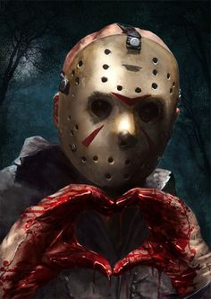

|  |
Jason Voorhees
Camper/Resident at Camp Crystal Lake
I was born on June 13th, 1946. My original death took place in the summer of 1957. I was the son of Pamela and Elias Voorhees. My dad left when I was young, so it was basically my mother and I. Mom didn't let me attend school. I was her "special" boy. She worked as a cook, at a summer camp, called Camp Crystal Lake. I still reside there today. I haven't been able to keep it up much over the years, but i do secure it pretty well. I was born with a disease called hydrocephalic. My face literally scares the shit out of people. That's one of the reasons I still wear this old hockey mask. I love hockey almost as much as I love my Mama. I'm looking for a company that requires the skills I have obtained over the years. I love the outdoors and I'm very handy with tools of all kinds. I'm more of a listener than a talker. I am also a fast learner, I'm quick on my toes, and just when you think I'm done, I pop back up.
|